Apache NetBeans
Apache NetBeansLatest release
NetBeans Nodes, Explorer Manager, and Component Palette Tutorial
| This tutorial needs a review. You can edit it in GitHub following these contribution guidelines. |
In this tutorial, you will learn how to create a BeanTreeView with drag and drop functionality. You will view the nodes in a variety of explorer views and create a Component Palette containing items created from your nodes.
The main points of this tutorial are threefold:
-
To demonstrate how a fully functional yet simple BeanTreeView is created.
-
To demonstrate a key feature in the NetBeans APIs, that of loosely coupled views.
-
To demonstrate how nodes can be turned into items in a Component Palette, without the intervention of a
layer.xmlfile.
Once this tutorial is finished, you will have a BeanTreeView that provides the following menu items, in addition to the support for dragging and dropping the child nodes:
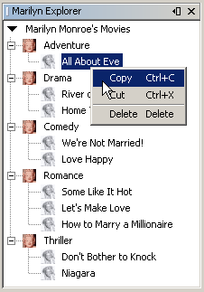
You will be shown how to change the explorer view from BeanTreeView to MenuView, ListView, and several other views supported by the Explorer and Property Sheet API.
This is what the completed project will look like in the Projects window:
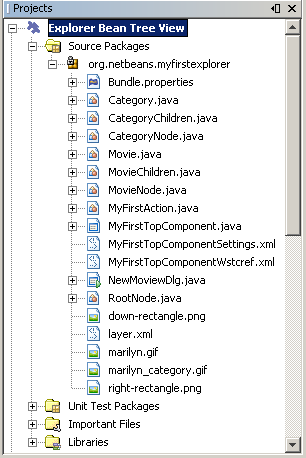
Installing the Software
Before you begin, you need to install the following software on your computer:
Also, you will use 4 icons in the tutorial. You can right-click them here and save them locally, then copy them to the module project’s location, after you create the module project later in this tutorial. Here are the 4 icons:
Getting Started
In this section, we use wizards to create a module project and a custom window component. We add a JScrollPane and create a new BeanTreeView. We then install the module project and display our view’s top node.
-
Choose File > New Project. In the New Project wizard, choose NetBeans Plug-in Modules under Categories and Module Project under Projects. Click Next. Type
ExplorerBeanTreeViewin Project Name and set Project Location to an appropriate folder on your disk. If they are not selected, select Standalone Module and Set as Main Project. Click Next.
-
Type
org.netbeans.myfirstexplorerin Code Name Base andExplorer Bean Tree Viewin Module Display Name. Click Finish.
-
Right-click the project, choose Properties, click Libraries in the Project Properties dialog box and declare a dependency on the following APIs:
-
Right-click the module project, choose New > File/Folder and choose Window Component from the NetBeans Module Development category. Click Next. Choose
editorin the drop-down list and select Open on Application Start. Click Next.
-
Type
MyFirstin Class Name Prefix. Optionally, add an icon with a dimension of 16x16 pixels. Click Finish.
-
Open
MyFirstTopComponent.javain the Design view. Right-click in the TopComponent, choose Set Layout, and select BorderLayout.
-
Use the Palette (Ctrl-Shift-8) to drop a
JScrollPaneonMyFirstTopComponent.java. Resize theJScrollPaneso that it covers the entire TopComponent. Right-click theJScrollPane, choose Change Variable Name and typemoviePane.
-
Open the Inspector, if it isn’t open. (Use the Window menu.) In the Inspector, select the
moviePane, open the Properties window (Ctrl-Shift-7), click the "Code" tab, and add this line to the Custom Creation Code property (the very last property in the list):
new BeanTreeView();Click OK.
BeanTreeView is one of several views provided by the Explorer and Property Sheet API. We will look at the other views later in this tutorial.
-
Click the Source toggle button in the GUI Builder. Right-click in the Source Editor, and choose Fix imports. The dependency you set on "Explorer and Property Sheet API" will cause the import statement for the BeanTreeView being generated for you by the IDE.
-
In the
Bundle.propertiesfile, change theCTL_MyFirstTopComponentkey to the value "Marilyn Explorer".
-
Right-click the project node and choose "Install/Reload in Development IDE". If a warning message appears, click OK. When the module installs, look under the Window menu and you will find a new menu item called "Open MyFirst Window", at the top of the list of menu items. Choose it and you will see the start of your explorer view:
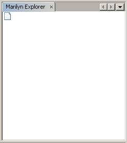
Without any coding, you have created the start of your BeanTreeView.
Using Nodes to Represent Data
Using nodes to represent data involves adding an Explorer Manager to our TopComponent’s Lookup. The Explorer Manager controls the view, especially the top node of our view. Next we will create a Category object and a Movie object and display each via a separate AbstractNode object and Children.Keys object. The AbstractNode provides the basic implementation of a node, allowing you to provide icons, as well as actions such as Cut and Delete. With the Children.Keys object, you simplify the handling of the nodes, using lightweight keys instead of the nodes themselves. Further details on the specific approaches taken are explained where appropriate below.
Setting Up an Explorer Manager
An Explorer Manager is the NetBeans API class that manages a view. For example, it notifies PropertyChangeListeners about changes to the nodes in the view. It also controls the root node in a view. For example, when you want to define a root node, you need to use the Explorer Manager’s setRootContext() method. To provide an Explorer Manager in a TopComponent, you must implement ExplorerManager.Provider , as shown in this subsection.
-
Open the
MyFirstTopComponent.javain the Source view and addimplements ExplorerManager.Providerto the signature at the top of the class.
-
Next, instantiate the
ExplorerManageras a transient object:
private transient ExplorerManager explorerManager = new ExplorerManager();-
Place the cursor in the signature. A lightbulb will prompt you to let the IDE insert an import statement and implement the abstract methods. Follow its advice, by clicking on the suggestion, and then fill out the generated
getExplorerManager()as follows:
public ExplorerManager getExplorerManager() {
return explorerManager;
}-
Now go to the Constructor and add the following after the last existing line:
associateLookup
( ExplorerUtils. createLookup(explorerManager, getActionMap()));
explorerManager.setRootContext(new AbstractNode(new CategoryChildren()));
explorerManager.getRootContext().setDisplayName("Marilyn Monroe's Movies");Here we place the Explorer Manager in the TopComponent’s Lookup. We set a class called "CategoryChildren" as the root node. We will create this class in the next section, and we will display it as the first node in our view. As display name it receives "Marilyn Monroe’s Movies".
-
Fix imports. A red underline will remain because we have not created the CategoryChildren class yet. We will do so in the next section.
Creating a Category
Let’s first define what a "Category" is.
-
Create a class called
Category.javaand add the following content:
public class Category {
private String name;
/** Creates a new instance of Category */
public Category() {
}
public String getName() {
return name;
}
public void setName(String name) {
this.name = name;
}
}From the above, you can see that a category has a name, and nothing more.
-
Create another class, this time for creating the nodes for the categories:
public class CategoryChildren extends Children.Keys {
private String[] Categories = new String[]{
"Adventure",
"Drama",
"Comedy",
"Romance",
"Thriller"};
public CategoryChildren() {
}
protected Node[] createNodes(Object key) {
Category obj = (Category) key;
return new Node[] { new CategoryNode( obj ) };
}
protected void addNotify() {
super.addNotify();
Category[] objs = new Category[Categories.length];
for (int i = 0; i < objs.length; i++) {
Category cat = new Category();
cat.setName(Categories[i]);
objs[i] = cat;
}
setKeys(objs);
}
}In this example, a popular children implementation called Children.Keys is used. By subclassing Children.Keys , you need not explicitly keep track of the nodes. Instead, you keep track of a set of keys, which are lighter weight objects. Each key typically represents one node. You must tell the implementation how to create a node for each key. You can decide for yourself what type of keys to use.
addNotify() is called the first time that a list of nodes is needed. An example of this is when a node is expanded. Here, when addNotify() is called, a new category is instantiated. When a child node needs to be constructed, the createNodes() method is called. It is passed the key for which it is making a node. It returns either none, one, or more nodes corresponding to what should be displayed for the key. In this example, a new instance of one category node is being created, and the key is passed into its constructor.
-
Fix imports, choosing
org.openide.nodes.Childrenandorg.openide.nodes.Node.
Note that in the code above, we create a node called CategoryNode . We will create it in the next step.
-
Create a class called
CategoryNode.javaand define it as follows:
public class CategoryNode extends AbstractNode {
/** Creates a new instance of CategoryNode */
public CategoryNode( Category category ) {
super( new MovieChildren(category), Lookups.singleton(category) );
setDisplayName(category.getName());
setIconBaseWithExtension("org/netbeans/myfirstexplorer/marilyn_category.gif");
}
public PasteType getDropType(Transferable t, final int action, int index) {
final Node dropNode = NodeTransfer.node( t,
DnDConstants.ACTION_COPY_OR_MOVE+NodeTransfer.CLIPBOARD_CUT );
if( null != dropNode ) {
final Movie movie = (Movie)dropNode.getLookup().lookup( Movie.class );
if( null != movie && !this.equals( dropNode.getParentNode() )) {
return new PasteType() {
public Transferable paste() throws IOException {
getChildren().add( new Node[] { new MovieNode(movie) } );
if( (action & DnDConstants.ACTION_MOVE) != 0 ) {
dropNode.getParentNode().getChildren().remove( new Node[] {dropNode} );
}
return null;
}
};
}
}
return null;
}
public Cookie getCookie(Class clazz) {
Children ch = getChildren();
if (clazz.isInstance(ch)) {
return (Cookie) ch;
}
return super.getCookie(clazz);
}
protected void createPasteTypes(Transferable t, List s) {
super.createPasteTypes(t, s);
PasteType paste = getDropType( t, DnDConstants.ACTION_COPY, -1 );
if( null != paste )
s.add( paste );
}
public Action[] getActions(boolean context) {
return new Action[] {
SystemAction.get( NewAction.class ),
SystemAction.get( PasteAction.class ) };
}
public boolean canDestroy() {
return true;
}
}An AbstractNode is a basic implementation of a node. It simplifies common requirements, such as the creation of the display name and the handling of icons. Other common requirements are handled as well. To understand what each of the methods in the code above does, click the method’s link to jump to the related Javadoc.
-
Fix imports. After you fic the import statements, several red underlines will remain, because we have not created
Movie.java,MovieChildren.java, andMovieNode.java. yet. We will do so in the next section.
Creating a Movie
Next, we’ll work on adding the children belonging to the categories. And the children are movies. Let’s begin by defining what a "movie" is.
-
Create a class called
Movie.java, with the following content:
public class Movie {
private Integer number;
private String category;
private String title;
/** Creates a new instance of Instrument */
public Movie() {
}
public Integer getNumber() {
return number;
}
public void setNumber(Integer number) {
this.number = number;
}
public String getCategory() {
return category;
}
public void setCategory(String category) {
this.category = category;
}
public String getTitle() {
return title;
}
public void setTitle(String title) {
this.title = title;
}
}From the above, you can see that a movie has a number, belongs to a category, and has a title.
-
Now let’s create the category’s children. The class to be created is called
MovieChildren.java. We use Index.ArrayChildren, so that we can put the nodes in an array list, which is loaded as needed. Until a child node is needed, such as when the parent node is expanded, it is not created. This is the content of the class:
public class MovieChildren extends Index.ArrayChildren {
private Category category;
private String[][] items = new String[][]{
{"0", "Adventure", "River of No Return"},
{"1", "Drama", "All About Eve"},
{"2", "Drama", "Home Town Story"},
{"3", "Comedy", "We're Not Married!"},
{"4", "Comedy", "Love Happy"},
{"5", "Romance", "Some Like It Hot"},
{"6", "Romance", "Let's Make Love"},
{"7", "Romance", "How to Marry a Millionaire"},
{"8", "Thriller", "Don't Bother to Knock"},
{"9", "Thriller", "Niagara"},
};
public MovieChildren(Category Category) {
this.category = Category;
}
protected java.util.List<Node> initCollection() {
ArrayList childrenNodes = new ArrayList( items.length );
for( int i=0; i < items.length; i++ ) {
if( category.getName().equals( items[i][1] ) ) {
Movie item = new Movie();
item.setNumber(new Integer(items[i][0]));
item.setCategory(items[i][1]);
item.setTitle(items[i][2]);
childrenNodes.add( new MovieNode( item ) );
}
}
return childrenNodes;
}
}-
Right-click the project, choose Properties, and use the Sources category to change the source level from 1.4 to 1.5. Click OK.
-
Fix imports. A red underline will remain because we have not create
MovieNode.java, which we will do in the next step.
-
Create a class called
MovieNode.javaand define it as follows:
public class MovieNode extends AbstractNode {
private Movie movie;
/** Creates a new instance of InstrumentNode */
public MovieNode(Movie key) {
super(Children.LEAF, Lookups.fixed( new Object[] {key} ) );
this.movie = key;
setDisplayName(key.getTitle());
setIconBaseWithExtension("org/netbeans/myfirstexplorer/marilyn.gif");
}
public boolean canCut() {
return true;
}
public boolean canDestroy() {
return true;
}
public Action[] getActions(boolean popup) {
return new Action[] {
SystemAction.get( CopyAction.class ),
SystemAction.get( CutAction.class ),
null,
SystemAction.get( DeleteAction.class ) };
}
}Fix imports.
Notice that most of this class is about defining actions on the movie nodes. When you right-click a movie, you’ll be able to choose "Copy" or "Cut" or "Delete".
Creating a Root Node
Now we are going to install our module. When we do so, we will test our module’s functionality and see if everything is as we would want it to be.
-
Right-click the module and choose Install/Reload in Development IDE.
-
Examine the result:
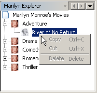
-
Notice that even though you can drag and drop movies from one category to another (by dragging with your mouse, with the Ctrl key held down when you want to copy a node), the menu items are greyed out. Also, notice that the root node does not have an icon.
-
First, we need to enable the menu items by adding the actions to the TopComponent’s action map. Do this by adding the following snippet to the end of the TopComponent’s Constructor:
ActionMap map = getActionMap();
map.put(DefaultEditorKit.copyAction, ExplorerUtils.actionCopy(explorerManager));
map.put(DefaultEditorKit.cutAction, ExplorerUtils.actionCut(explorerManager));
map.put(DefaultEditorKit.pasteAction, ExplorerUtils.actionPaste(explorerManager));
map.put("delete", ExplorerUtils.actionDelete(explorerManager, true));-
Next, to be able to control the icon displayed by the root node, we need to create a class for that node. Currently, we are using a default AbstractNode, over which we have no control.
Create a class called RootNode.java , with this content:
public class RootNode extends AbstractNode {
/** Creates a new instance of RootNode */
public RootNode(Children children) {
super(children);
}
public Image getIcon(int type) {
return Utilities.loadImage("org/netbeans/myfirstexplorer/right-rectangle.png");
}
public Image getOpenedIcon(int type) {
return Utilities.loadImage("org/netbeans/myfirstexplorer/down-rectangle.png");
}
}Notice that here we set one icon for when the node is in its closed state and another for when it is expanded. To use this node, we need to change this line in the TopComponent:
explorerManager.setRootContext(new AbstractNode(new CategoryChildren()));We need to replace that line with this line:
explorerManager.setRootContext(new RootNode(new CategoryChildren()));-
Install the module again and notice the icons displayed for the root node’s collapsed and expanded states. Here, the icon for the expanded state is shown:
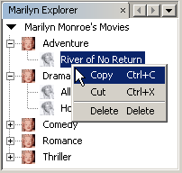
Also notice that the movie node’s menu items are now enabled and functional.
Using Explorer Views to View Data
The NetBeans APIs provide a variety of explorer views, which are very simple to add to your TopComponent. After adding one or two lines of code, the view on your data can be completely different, creating a radically altered display for your end users and a wide range of choices for you and your development team.
However, note that only the BeanTreeView supports the drag and drop functionality you added earlier in this tutorial. When you change to a different explorer view, as shown below, the drag and drop functionality will simply be disabled.
List View
List view is an explorer view that displays items in a list. It is provided by the ListView class, which belongs to the Explorer And Property Sheet API.
-
Add this line to the end of the TopComponent’s Constructor:
listView = new ListView();Put the cursor in the line and let the IDE generate an import statement for org.openide.explorer.view.ListView . Also let the IDE create the listView field.
-
Below the line above, add this line, which adds the view to the TopComponent:
add(listView, BorderLayout.CENTER);Let the IDE generate the java.awt.BorderLayout import statement for BorderLayout.
| When you created the TopComponent earlier in this tutorial, you should have set the layout manager to BorderLayout. If you did not do this, make the JScrollPane smaller, right-click the TopComponent, choose Set Layout, and select BorderLayout. |
-
Install the module again. Notice that the view is now as follows:
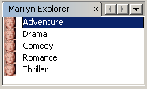
When you click on a category, the movies are displayed:
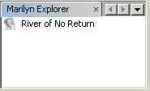
Choice View
Choice view is an explorer view based on a combo box. It is provided by the ChoiceView class, which belongs to the Explorer And Property Sheet API.
-
Add this line to the end of the TopComponent’s Constructor:
choiceView = new ChoiceView();Put the cursor in the line and let the IDE generate an import statement for org.openide.explorer.view.ChoiceView . Also let the IDE create the choiceView field.
-
Instead of the line that adds a ListView to the TopComponent, write a line that adds the ChoiceView:
add(choiceView, BorderLayout.CENTER);-
Install the module again. Notice that the view is now as follows:
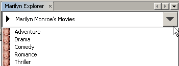
| If your TopComponent is very large, the combo box provided by the choice view will be very large as well. |
Menu View
Menu view is an explorer view that displays the hierarchy of nodes in a popup menu. Initially, it shows a left button which opens a popup menu from the root context and a right button which opens a popup menu from the currently explored context. It is provided by the MenuView class, which belongs to the Explorer And Property Sheet API.
-
Add this line to the end of the TopComponent’s Constructor:
menuView = new MenuView();Put the cursor in the line and let the IDE generate an import statement for org.openide.explorer.view.MenuView . Also let the IDE create the menuView field.
-
Instead of the line that adds a ChoiceView to the TopComponent, write a line that adds the MenuView:
add(menuView, BorderLayout.CENTER);-
Install the module again. Notice that the view is now as follows:
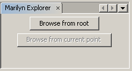
When you click on the first button, the complete list of categories is displayed:
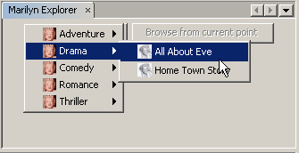
When you click with the right mouse button on the "Browse from root" button, the "Browse from current point" button is enabled and you can browse to movies within the selected category:
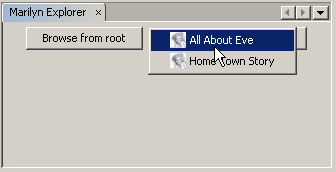
Other Views
The org.openide.explorer.view package provides many other explorer views, in addition to those outlined above. For example, IconView presents the categories and its contents as icons:
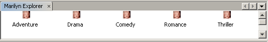
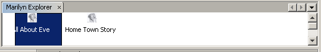
Other views include ContextTreeView and ListTableView.
Finally, a TreeTableView could also be used. This NetBeans API class lets you create a view tree of nodes on the left and its properties in a table on the right. This is an area that deserves a tutorial of its own. Similarly, creating you own explorer view is a worthwhile but complex project that will be described in a separate tutorial.
Using Palette Items to Reuse Nodes
Alternatively, the nodes can form the basis of palette items, as shown below:
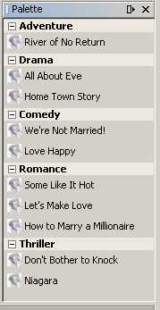
In this section, you are shown how to add the items to a Component Palette and how to add some simple drag and drop functionality to the items in the palette. Only a brief overview will be given here, because other tutorials exist that provide details on the Component Palette API.
Instead of adding an Explorer Manager to the TopComponent’s Lookup, you will need to add a PaletteController. When you do this, the Component Palette opens when the TopComponent opens, displaying its content, consisting of palette items. PaletteController is provided by the Core - Component Palette API.
-
Right-click the project, choose Properties, and add a dependency on Core - Component Palette in the Libraries category of the Project Properties dialog box.
-
Declare a new PaletteController and set the root node as the palette’s root:
private PaletteController palette = null;
private RootNode paletteRoot;-
In the TopComponent’s Constructor, comment out the calls to the Explorer Manager. You can also comment out the definition of the action map, since the Component Palette automatically provides Copy, Cut, Paste, and Delete actions to palette items.
In the Inspector, select the moviePane , open the Properties window (Ctrl-Shift-7), click the "Code" tab, and delete the line in the Custom Creation Code property (the very last property in the list).
-
At the end of the Constructor, add this line to add the Component Palette to the TopComponent’s Lookup:
associateLookup( Lookups.fixed( new Object[] {getPalette()} ));-
Here, we create a new instance of the PaletteController and return it to the TopComponent’s Lookup:
private PaletteController getPalette() {
if( null == palette ) {
paletteRoot = new RootNode(new CategoryChildren());
paletteRoot.setName( "Palette Root");
palette = PaletteFactory.createPalette( paletteRoot,
new MyPaletteActions(), null, new MyDragAndDropHandler() );
}
return palette;
}-
A palette consists of a root, a set of actions, and a handler for drag and drop events. For purposes of this simple example, we will set our palette actions to null:
private static class MyPaletteActions extends PaletteActions {
public Action[] getImportActions() {
return null;
}
public Action[] getCustomPaletteActions() {
return null;
}
public Action[] getCustomCategoryActions(Lookup lookup) {
return null;
}
public Action[] getCustomItemActions(Lookup lookup) {
return null;
}
public Action getPreferredAction(Lookup lookup) {
return null;
}
}-
And here is the definition of our drag and drop handler, using the NetBeans API class DragAndDropHandler:
public static final DataFlavor MyCustomDataFlavor
= new DataFlavor( Object.class, "MyDND" );
private static class MyDragAndDropHandler extends DragAndDropHandler {
public void customize(ExTransferable exTransferable, Lookup lookup) {
final MovieNode item = (MovieNode)lookup.lookup( MovieNode.class );
if( null != item ) {
exTransferable. put( new ExTransferable.Single( MyCustomDataFlavor ) {
protected Object getData() throws IOException, UnsupportedFlavorException {
//return item.getSomeData();
return null;
}
});
}
}
}-
Install the module again. When the TopComponent opens, the new Component Palette is shown. The categories you created in this tutorial are now categories in the Component Palette, while the movies are items within the categories. Next, you need to add drag and drop functionality to the items in the palette, as described in the NetBeans Drag and Drop Tutorial.